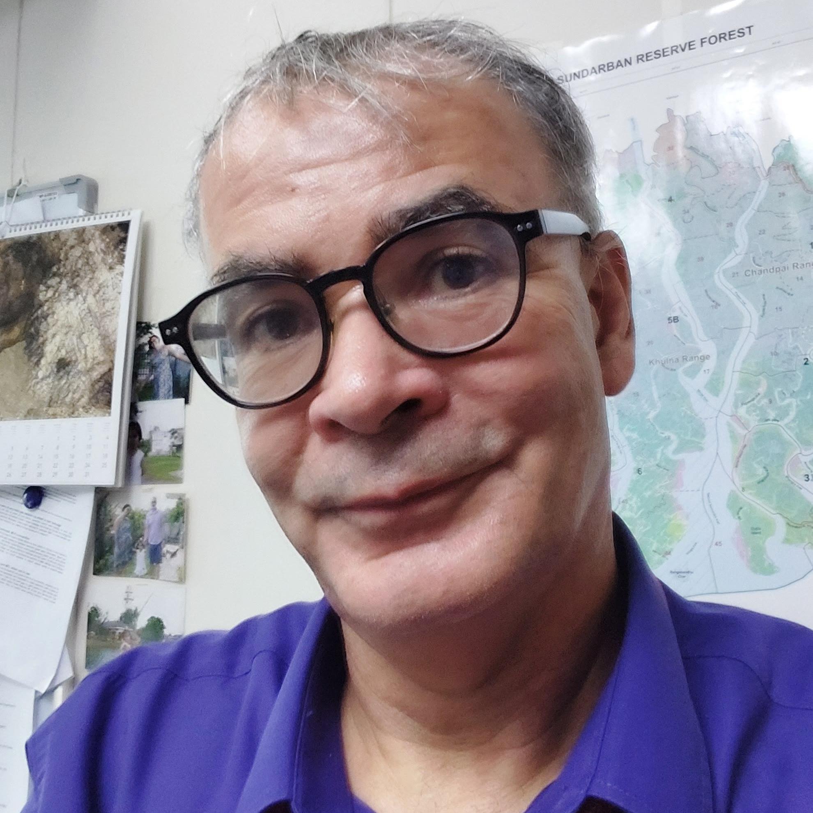
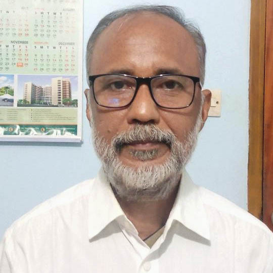
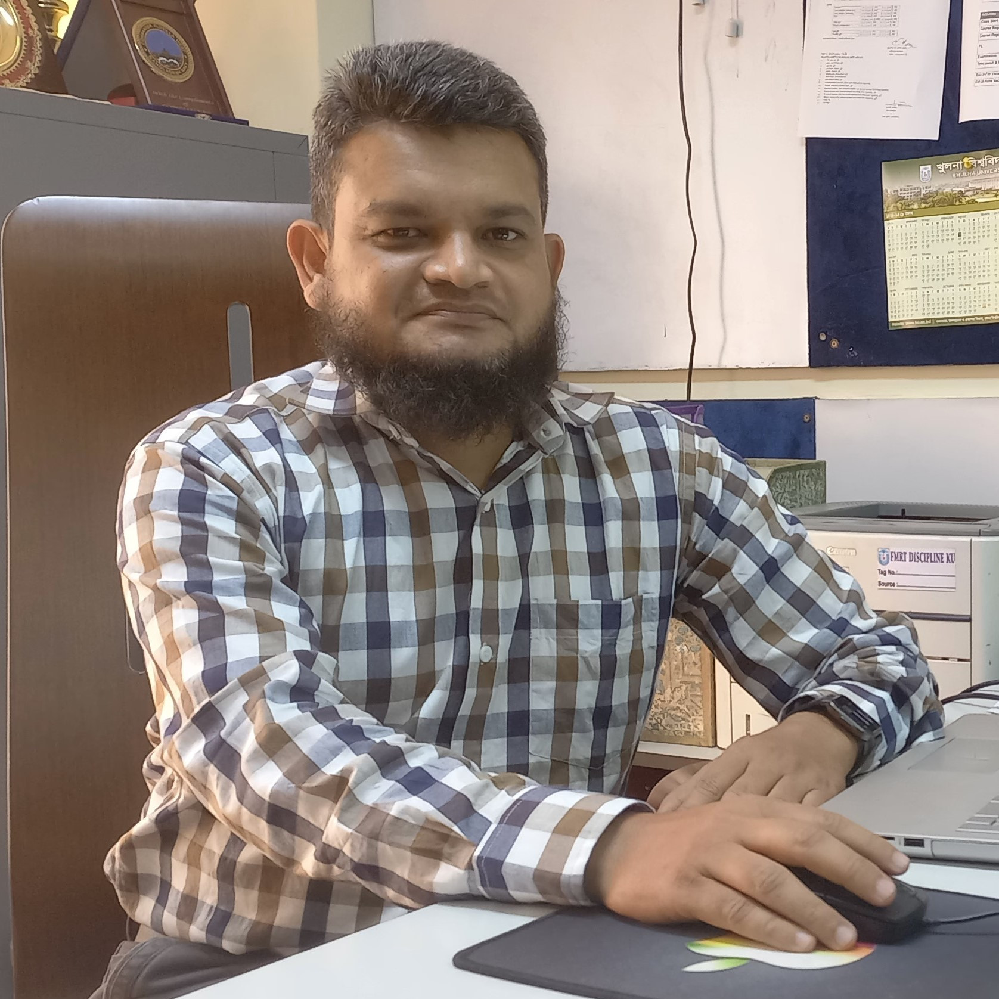
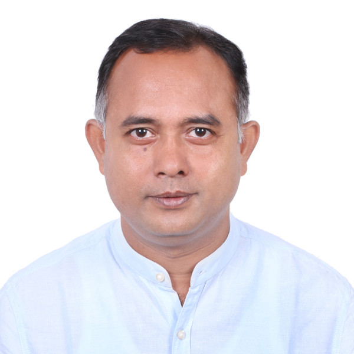

Jointy organized by:
About The Event
The fisheries and aquaculture sub-sector is vital for food security, income
generation and
export earnings for Bangladesh and many other coastal countries. However, the sustainability
of this important sub-sector depends on the responsible management of aquatic resources and
ecosystems that support replenishment of fisheries stock. Many species of fish occupying
inland and marine waters of Bangladesh are dependent on interaction with mangroves in
many ways. Their interactions are multifaceted, dynamic processes involving both inland and
marine waters, forests, tidal regimes, geology and soils, climate and its changes, and the
biotic components of the relevant ecosystems.
The fisheries-mangrove interactions also include the aspects of forestry tied to customary
resource extraction by the coastal community and to the country's development needs. Thus,
the responsible management of fisheries and aquaculture resources and the ecosystems upon
which this important sub-sector depends has been a major challenge that needs to be
addressed with empirically derived knowledge from south Asia and elsewhere. To this end,
this symposium is intended to be a premier international forum to highlight global best
practices on sustainable fisheries and forestry resource management and to facilitate
partnerships and cooperation with academia, practitioner, industry, and policymakers.
Where
Fisheries and Marine Resource Technology Discipline,
Khulna University, Khulna, Bangladesh
When
Wednesday to Friday
01-03 March, 2023
Event Speakers
Here are some of our speakers

Dr. Vinita Apte
Founder Director, TERRE Policy Centre,
India

Mr. Milon Sinha
Director, Nature Environment & Wildlife Society,
India
.jpg)
Mr. Stefan Holler
Aquaculture expert, Naturland,
Germany

Dr. Stefan Alfred Groenewold
Principal Advisor; GIZ,
Bangladesh

Mr. Ralph Dejas
Project Manager, Global Nature Fund,
Germany
Dr Norman Duke
Senior Research Scientist
Centre for Tropical Water and Aquatic Ecosystem Research
Dr. Nora Devoe
Research Program Manager for Forestry
Australia
Sadiqul Awal
Lecturer, La Trobe University and
Agriculture & Technology
Australia
Event Schedule
Here is our event schedule
Inaugural Session
Registration
Guests and participants take their seats
Welcome Speech
Speech by the special guests
Speech by the chief guest
Prof. Md. Mahmood Hossain
Vice-chancellor, Khulna
University
Vote of thanks
Closing Speech by the Conference Chairperson
Caring about Mangrove Ecosystem Health is Caring about People!
Norman C Duke (Key note
Speaker)
James Cook University, Queensland, Australia.
Tea break
Session I: Food security, coastal aquaculture and tidal forest nexus
Chair: Prof. Dr. Dillip Kumar Datta, Khulna University
Co-Chair: Stefan Holla, Naturland Germany

Coastal Aquaculture and Mangrove Forest Nexus:
State of Affairs and Future Research Needs.
Prof. Dr. Nazmul Ahsan (Plenary Speaker),
Khulna University
The Association Food for Biodiversity.
Mr. Ralph Dejas,
Project manager at
Global Nature
Fund
Phytoplankton Community Dynamics and their Environmental Drivers in an Estuarine Mangrove
Forest, Sundarbans, Bangladesh.
S. M. Mustafizur Rahman,
Dept. of
Oceanography and
Hydrography, Bangabandhu Sheikh Mujibur Rahman Maritime University
Contribution of fine root in carbon dynamics of the Sundarbans mangrove ecosystems,
Bangladesh.
Md. Kamruzzaman,
Forestry and Wood Technology Discipline, Khulna
University
Potential Toxicity of Pesticides and Its Transformation Products to Aquatic Organisms.
Md.
Golam Sarower,
Fisheries and Marine Resource Technology Discipline, Khulna University
Plastic pollution affects courtship behavior, phenotypes and enzymatic activities of male guppy
(Poecilia reticulata)
Sheikh Mustafizur Rahman,
Fisheries and Marine Resource
Technology
Discipline, Khulna University
Biodiversity- The New Core Area of the Development Cooperation between Bangladesh and
Germany.
Stefan Alfred Groenewold,
Deutsche Gesellschaft fur International Zusammenarbeit (GIZ) GmbH,Dhaka, Bangladesh
Lunch break
Session 2: Sustainable aquaculture and fisheries in south
Asia
Chair: R. Ramasubramanian, MS Swaminathan Research Foundation, India
Co-Chair: Roshmon Thomas Mathew, King Faisal University, Saudi Arabia
Effect of Dietary Lysine Deficiency on Nile Tilapia Oreochromis niloticus
Production in Fertilized Ponds
Marc Verdegem (Plenary Speaker)
Wageningen Institute of Animal Sciences
Synergistic Effects of Mangrove Leaf Litter and Supplemental Feed on Water Quality, Growth and
Survival of Shrimp (Penaeus monodon, Fabricius, 1798) Postlarvae
Md. Iftakharul Alam
Department of Fisheries, Ministry of Fisheries and Livestock, The People’s Republic of
Bangladesh
Effect of Indigenous Probiotics on Vibrio Propagation and Digestive Enzyme Activity in Black
Tiger Shrimp (Penaeus monodon)
H M Rakibul Islam
Bangladesh Fisheries Research Institute, shrimp research station, Bagerhat-9300, Bangladesh
GLOBAL G.A.P. Aquaculture Standard: Certifying Safe and Responsible Farming around the World.
Pham Viet Anh
GLOBALG.A.P. c/o FoodPLUS GmbH, Spichernstr. 55, 50672 Koeln, Germany
Culture of Orange Mud Crab Scylla olivacea (Herbst, 1896): Effect of Sex Ratio and Seasons on
Growth, Survival and Intactness
Md. Latiful Islam
Bangladesh Fisheries Research Institute, Brackishwater Station, Paikgacha, Khulna-9280,
Bangladesh
Concept of Ecovillage through Community-Based Ecotourism: A Conceptual Framework
Md. Wasiul Islam
Forestry and Wood Technology Discipline, Khulna University, Khulna-9208, Bangladesh
Sustainable Aquaculture in Mangrove Ecosystem (SAIME) in Transboundary Sundarbans: A Climate
Adaptive, Ecosystem-Based Approach Ensuring Livelihood Security of Coastal Communities.
Ralph Dejas
Global Nature Fund, Radolfzell, Fritz-Reichle-Ring 4, 78315 Radolfzell, Germany
Coffee and tea break
Session 3: Panel discussion on ecosystem approach linking coastal livelihoods and biodiversity conservation
Poster Session
Chair: Dr. K. Anisul Huq, Fisheries and Marine Resource Technology Discipline, Khulna
University, Khulna.
Co-Chair: Md. Sherazul Islam, PhD. Professor. Department of Fisheries & Marine Bioscience.
Jashore University of Science & Technology.
| ID | Name | Title | Institute |
| PP 01 | Rukaiya Hossain | Effects of Pesticide on the Cellular and Physiological Alterations in Zebra Fish (Danio rerio) | FMRT, KU |
| PP 02 | Nurunnahar Nadira | Antibiotic Sensitivity of Vibrio spp. Isolated from Egg of Mud Crab (Scylla olivacea) Collected from Hatchery | FMRT, KU |
| PP 03 | Md Shamim Hasan | Health Safety Concern among the Improved Traditional Shrimp Farmers in the Southwestern Region of Bangladesh | FMRT, KU |
| PP 04 | Sheikh Shaon Ahmmed | Effects of Ginger (Zingiber Officinalis) Extracts on Giant Tiger Shrimp (Penaeus Monodon) Growth and Immune Responses | FMRT, KU |
| PP 05 | Joya Biswas | Effect of Vasaka, Justicia adhatoda Leaf Extract on Growth and Immunity of Shrimp, Penaeus monodon | FMRT, KU |
| PP 06 | Asikur Rahman | Seasonal variation of sex ratio, growth pattern, form factor and condition factor of the Otolithoides pama (Hamilton, 1822) from the Bay of Bengal, south-west Bangladesh | FMRT, KU |
| PP 07 | Rakib Hossain | Effect of Dietary Protein Levels on Growth Performance, Body Composition, and Hematology of GIFT Tilapia Reared in Biofloc System | FMRT, KU |
| PP 08 | Md. Adnan Sajib | Impact of salinity intrusion on land use, biodiversity and ecosystem services in Tala, Satkhira | FMRT, KU |
| PP 09 | Saikat Bain | Effects of Replacing Fish Meal with Pangus Waste Silage in Diets on Growth Performance, Survival and Feed Efficiency of Nile Tilapia, Oreochromis niloticus | FMRT, KU |
| PP 10 | Md. Nurul Islam | Big behind the small: Destruction of Commercially Important Fish and Shrimp Species in the Name of Tiny Ones | FMRT, KU |
| PP 11 | Srabanti Das Ankhi | Impact of Waterlogging on Land Use, Biodiversity, and Ecosystem Services in Tala, Satkhira | FMRT, KU |
| PP 12 | Md. Khaladur Rahman Shohag | Health Safety Concerns among the Semi-Intensive Shrimp Farmers in the South-Western Region of Bangladesh | FMRT, KU |
| PP 13 | S.M. Nahid Jobayer | Assessment of physicochemical parameters of water in an industrial scale In Pond Raceway System | FMRT, KU |
| PP 14 | Pial Paul | Climate Change Effects on the Small Scale Fisheries in the Northern Part of Bangladesh and Associated Adaptation Measures | FMRT, KU |
| PP 15 | Jannatul Ferdaus Jyoti | Opportunity of Commercially Important Vegetables Culture in Fish Farm: A Review | FMRT, KU |
| PP 16 | Dristi Das | Combined Effects of Salinity and Increasing Temperature on Zebrafish (Danio rerio) | FMRT, KU |
| PP 17 | Amena Arefin | Effects of Plastic Feeding and Predation on Reproductive Performance of Guppy (Poecilia reticulate) | FMRT, KU |
| PP 18 | Halima Tus Sadia | Impact of Sesbania grandiflora (Vegetable hummingbird) Leaves Extract on Growth and Immune Responses of Penaeus monodon (Shrimp) | FMRT, KU |
| PP 19 | Farhana Nasrin | In Vitro Antibacterial Activity of Lawsonia inermis Leaf Ethanolic Extract Against Shrimp Pathogenic Bacteria Vibrio parahaemolyticus | FMRT, KU |
| PP 20 | Israt Jahan Tissa | Seasonal variation of Sex ratio, growth pattern, form factor and condition factor of Gudusia chapra (Hamilton, 1822) from the Bay of Bengal, south-west Bangladesh | FMRT, KU |
| PP 21 | Md. Ridwanul Islam | Health Safety Concern among Fish Hatchery Workers in The South-Western Region of Bangladesh | FMRT, KU |
| PP 22 | Md. Mahmudul Hasan | Availability of trace metals and their spatial and seasonal distribution in the aquatic environment of Rupsha-Passur river and some selected locations of Sundarbans | FMRT, KU |
| PP 23 | Rani Akhter | Effect of Microplastics on Phenotypic Traits and Enzyme Activities in Guppy (Poecilia reticulata) | FMRT, KU |
| PP 24 | Shabrin Nahar Mithila | Habitat and Tissue Specific Heavy Metal Pollution of Hilsa in Bangladesh | FMRT, KU |
| PP 25 | Mahir Faisal Rahi | Impacts of Climate Change on Small-Scale Fisheries in the North-Eastern Region of Bangladesh | FMRT, KU |
| PP 26 | Md. Musfiqur Rahman | Effect of salinity on Selected Biological Traits of Zebrafish (Danio rerio) | FMRT, KU |
| PP 27 | Sanjida Yeasmin | Effect of mangrove leaf litter on shrimp (Penaeus monodon, Fabricius, 1798) growth and color | FMRT, KU |
| PP 28 | Nimatul Jannat | In Vitro Antibacterial Activity of Ethanolic Extract of Drumstick (Moringa Olifera) Leaf Against Shrimp Pathogenic Bacteria Vibrio parahaemolyticus | FMRT, KU |
| PP 29 | Ikramul Islam Shovqn | Fishing with poison: A threat to aquatic biodiversity in the Sundarbans area | |
| PP 30 | Rahat Bin Shahid | Availability of fishes under legal size in local fish markets of Khulna | FMRT, KU |
| PP 31 | Supriya Roy Tithi | Effects of Macroalgae, Stuckenia pectinata Based Bioactive Compounds on Growth and Metabolic Activities in Monosex Tilapia (Oreochromis niloticus) | FMRT, KU |
| PP 32 | Khadiza Khatun | Assessment of Infectious Hypodermal and Hematopoietic Necrosis Virus and Monodon Baculovirus by Molecular Technique in Penaeid Shrimp Hatcheries | FMRT, KU |
| PP 33 | Airin Sultana | Influence of Biofloc Technology on Water Quality Parameters in Aquaculture: A Meta-analysis | FMRT, KU |
| PP 34 | Umma Habiba | Effect of Size Variation in the Proximate Composition of Tuna Fish (Auxis thazard) | FMRT, KU |
| PP 35 | Fatema Tuz Zahura Anti | Spatial Distribution of Particulate Organic Carbon and its relation with Current and Oceanic Nino Index in the Northern Bay of Bengal | FMRT, KU |
| PP 36 | Ahisha Siddika | Impact of Salinity Stress on Selected Physiological Traits of Labeo rohita (Hamilton, 1822) | FMRT, KU |
| PP 37 | Lopa Mudra Das | Microplastics in Sillaginopsis panijus, Otolithoides pama and Johnius argentatus from the Sundarbans of Bangladesh | FMRT, KU |
| PP 38 | Md. Nahidul Islam | Assessment of Physico-Mental Health and Sexual Abuse of Child Labour Involved in Fishing and Fry Collection in Khulna District, Bangladesh | FMRT, KU |
| PP 39 | Nittya Sarker | Biodiversity assessment of fish species in relation to fishing gear in Rupsha River of Khulna district, Bangladesh | FMRT, KU |
| PP 40 | Afia Anjum | Effect of stocking density on growth performance of climbing perch Anabas testudineus in biofloc system | FMRT, KU |
| PP 41 | Sumaia Sidratin Muntaha | Infection by Macrobrachium rosenbergii Nodavirus (MrNV) Associated with Extra Small Virus (XSV), Agent of White Tail Disease (WTD) in Macrobrachium rosenbergii: A Review | FMRT, KU |
| PP 42 | Sagarika Singh | Microplastics in Mystus gulio, Lates calcarifer and Hyporhamphus limbatus from the Sundarbans of Bangladesh | FMRT, KU |
| PP 43 | Tamanna Fardoshi Anni | Analysis of Macroalgae (Chara braunii) Derived Bioactive Compounds to Evaluate Their Effect on Growth Performance and Biochemical Changes in Metabolic Activities in Mono-sex Tilapia (Oreochromis niloticus) | FMRT, KU |
| PP 44 | Md. Raihan Kaiser Raju | Intra-specific diversity of the Silver grunt (Pomadasys hasta) from three locations of Bangladesh based on morphometric analysis | FMRT, KU |
| PP 45 | Mst. Anika Khatun | Trace Metal Distribution in Water, Sediment and Selected Benthos and Its Effects on Benthos Community Structure across Rupsha-Passur River System | FMRT, KU |
| PP 46 | Jerin Tasnim | Study of Some Biological Aspects of the Freshwater Mud Eel (Monopterus cuchia) | FMRT, KU |
| PP 47 | Mousumi Akter | Women involvement in Mud crab fattening and culture activitiers in southwest coastal region | FMRT, KU |
| PP 48 | Bijoy Biswas | Development and Evaluation of a Diet for Nile Tilapia Replacing Fish Meal with Silage Prepared from Fish Wastes | FMRT, KU |
| PP 49 | Abdus Samad | Effects of Partial Substitution of Fish Meal with Carp Waste Silage in Diets on Growth Performance of Nile Tilapia | Fmrt, KU |
| PP 50 | Samiur Rahman | Population Parameters of Pomadasys hasta in the Coastal Region of Bangladesh | |
| PP 51 | Munna Khatun | Molecular Diagnosis of White Spot Syndrome Virus (WSSV) and Acute Hepatopancreatic Necrosis Disease (AHPND) Causative Agent in Black Tiger Shrimp Hatcheries | FMRT, KU |
| PP 52 | Ashim Kumar Ghosh | Study of population structure with peak breeding season of the Asian seabass Lates calcarifer (Bloch, 1790) along the coastal areas of Bangladesh | FMRT, KU |
| PP 53 | Shanchita Zaman Chowdhury | SUSTAINABLE ECOSYSTEM BASED PRAWN FARMING SYSTEM in SOUTHWEST COASTAL | FMRT, KU |
| PP 54 | Md. Nuruzzaman Khan | Identification of Sex Determination Mechanism and Sex Linked Markers of the Migratory River Shad, Hilsa (Tenualosa ilisha) | FMRT |
| PP 55 | Prianka Paul | Effect of Stocking Density on Water Quality and Growth Performance of Ompok pabda Reared in Biofloc Technology System | JUST |
| PP 56 | Monowara Khatun | Biochar as a Potential Soil Conditioner in Saline Prone Coastal Area of Bangladesh | SWE |
| PP 57 | Md. Rashedul Islam | Enumeration the load of total bacteria and some chitinolytic bacteria in the production line of mud crab (Scylla olivacea) hatchery | FMRT, KU |
| PP 58 | Md. Amirul Islam | Effect of Biofloc on Feed Efficiency, Growth and Production of Giant Freshwater Prawn (Macrobrachium rosenbergii De Man, 1879) | BFRI |
| PP 59 | Al- Hasan Antu | Potential Fishing Zone Forecasting: An Innovative Approach for Sustainable Fisheries Management in the Bay of Bengal, Bangladesh | |
| PP 60 | Munira Afroz Tithi | Adapting to Coastal Climate Change: An Investigation of House Evolution in Maukhali Village, Pankhali Union, Dacope Upazila, Khulna District | URP |
| PP 61 | Kaushik Kumar Das | A Cross-sectional study on the Adaptation of Indigenous Munda Communities taking support of Different Organizations Addressing Climate Change | NGO |
| PP 62 | Nushrat Alam Nabila | An Assessment of Livelihood Vulnerability of Climate Induced Migrants: A Micro Level Study in Dumuria Upazila of Khulna District, Bangladesh | ES |
| PP 63 | Syed Sazidul Islam | Performance Evaluation of Main Crop and Ratoon Crop for Boro Rice in Saline Soil Condition of Southwest Coastal Region of Bangladesh | SWE |
| PP 64 | Babu Kumar Roy | Freshwater Prawn (Macrobrachium rosenbergii) Culture through Post Larvae Production in Earthen Ponds in the Coastal District of Satkhira, Bangladesh | FMRT, KU |
| PP 65 | Md. Alamgir Hossain | Integrated Environmental Assessment for Marine Spatial Planning of St. Martin’s Island, Bangladesh | Maritime |
| PP 66 | Sheikh Fahim Faysal Sowrav | Multi-dimensional approach for an Environmental Health assessment of a Deltaic Mangrove Ecosystem, Sundarbans | Maritime |
| PP 67 | Md. Kamrul Islam | Population Dynamics of the Mud Crab (Scylla olivacea) from the Territorial area of the Sundarbans Mangrove Forest in Bangladesh | JUST |
| PP 68 | Zakia Jahan Shuchi | Proximate Composition and Fatty Acid of Mud Crab (Scylla olivacea) in Respect of Different Habitat and Seasons from Sundarbans Mangrove Forest, Bangladesh | JUST |
| PP 69 | Fatima Pervin | Growth performance of Asian stinging catfish, Heteropneustes fossilis considering different stocking densities and feed in cistern condition | JUST |
| PP 70 | Syeda Nusrat Jahan | Quality Assessment of Oven Dried Puntius sophore at Different Temperature | RU |
| PP 71 | Zahid Hasan | BANGLADESH | JUST |
| PP 72 | Prema Hazra | Consumer Perception about Ready to Cook (RTC) Fish and other Meat Products from Southwest Coastal Community of Bangladesh | Plenary Aqua |
| PP 73 | Md. Sazedul Hoque | Microplastics in Marine Fishes from the Bay of Bengal: a Concern for the Sustainable Marine Fisheries of Bangladesh | PSTU |
| PP 74 | Md. Sazedul Hoque | Occupational Safety and Health Issues of Artisanal Hilsa Fishers in the Coastal Area of Bangladesh | PSTU |
| PP 75 | Imran Parvez | Identification of Commercially Important Bivalve Species From the Coast of Bangladesh: Potenital for its Sustainable Coastal Aquaculture | HDSTU |
| PP 76 | Mst. Sharmin Nahar | Water Quality Parameters and Heavy Metals Concentrations in Water, Sediment and Fish organs (Rhinomugil corsula) in Pashur River | JUST |
| PP 77 | Md. Masudul Haque | Crablet Production in Hatchery and Nursing Performance in Ponds of Mud Crab Scylla olivacea in Southwest Coastal Bangladesh | NGF |
| PP 78 | Dinesh Chandra Shaha | Evaluated suitable salt-tolerant fish species for mariculture in the upper Pasur-Shibsa River estuarine area considering climate change adaptation | BSMRSTU |
| PP 79 | Kazi Amdadul Hoque | Friendship Mangroves afforestation contributing significantly to socio economic development of the coastal communities in Assasuni and Shyamnagar Upazilas of Satkhira District, Bangladesh | NGO |
| PP 80 | Md. Al-amin Mollah | Species Composition and Carbon Stock of Trees in the Sundarbans Mangrove Forest in Relation to Habitat and Salinity Differences | FWT |
| PP 81 | Shafiq Rheman | Prevalence and Antibiotics Resistance of Escherichia coli Isolated from Aquatic Foods Sold in Wet Markets in Khulna, Bangladesh: A Preliminary Investigation | WorldFish |
| PP 82 | Munia Akhter | Comparison of proximate composition and fatty acids of mud crab (Scylla olivacea) in respect of sexes and territorial and deeper mangrove forest of Bangladesh | JUST |
| PP 83 | B.K. Dey | Effect of temperature on digestibility of non-starch polysaccharide rich ingredients in Nile tilapia (Oreochromis niloticus) | Netharland |
| PP 84 | MD. Mustafizur Rahman | Isolation, Identification and Bioactivity Evaluation of Endophytic Fungi from Brownlowia tersa, a Mangrove Plant of Sundarbans | Pharm |
| PP 85 | Md. Akramul Islam | The Role Of Superior Mangrove Species For Climate Resilient Coastal Ecosystem Of Sundarbans, Bangladesh | Bangladesh Forest Research Institute |
| PP 86 | Chandrima Sinha and Ajanta Dey | Impact Of Improvised Chullah to Reduce Forest Dependency of Sundarban Women | Nature Environment and Wildlife Society |
| PP 87 | Md. Shah Alam Sarker | Evaluation of different stocking density of small indigenous fish pabda with carp polyculture system at Jhenaidah district | BOU |
| PP 88 | R. Moses Inbaraj | Advances Of Biofloc Aquaculture Technology | India |
| PP 89 | Mohammad Hasnal Alam | Plankton Abundance and Primary Productivity in an Industrial Scale In Pond Raceway System | WF |
| PP 90 | Md. Arifur Rahman | Practice of Aquasilviculture at Shyamnagar Upazilla in Shatkhira | FWT |
| PP 91 | Md. Seikh Sadiul Islam Tanvir | Physio-chemical Characteristics of Honey from the Bangladesh Sundarbans Mangrove Forest | FWT |
| PP 92 | Md. Jalilur Rahman | Impacts of an Effective Brood Hilsa Ban Period on Hilsa Production | WorldFish |
| PP 93 | Ranajit Kumar | Application of Probiotics and Prebiotics for Promoting Growth of Tiger Shrimp (Penaeus monodon): An Approach to Eco-friendly Shrimp Aquaculture | DoF |
| PP 94 | Md. Mosharraf Hossain | Aquaponics: A Smart Technology for Adaptation to Climate Changes in the South-western Coastal Region of Bangladesh | |
| PP 95 | Tanzera Khatun | Effect of fish fry collection on biodiversity and alternative livelihood options for fry collectors in Rupsha River | FMRT, KU |
| PPV 01 | Jamie McMurtrie | Assessment of oxytetracycline exposure on fish skin microbiomes in an earthen pond polyculture pond system | UK |
| PPV 02 | Md. Moshiur Rahman | Integrated Agriculture: A Climate Resilient Farming Approach to Cope with Waterlogging in the South-Western Region of Bangladesh | USA |
| PPV 03 | Partho Pratim Debnath | The Capacity of the Tilapia Lake Virus (TiLV) to Survive in the Environment (Water and Sediment) and Sustain its Infectiousness in the Absence of a Host | Thailand |
| PPV 04 | Joyanta Bir | Addressing cellular and histopathological alterations in brackish water mussels (Mytilus trossulus) at different salinity through Tissue-level biomarkers | Spain |
| PPV 05 | Sarower Mahfuj | Evaluating phenotypic heterogeneities of Hyporhamphus limbatus using conventional and truss-based morphometrics | Thailand |
| PPV 06 | Shikder Saiful Islam | Algal microbiomes, their interactions, and functions in ecosystem structure | Australia |
| PPV 07 | Md Mahmud-Al-Hasan | Mitigation of winter thermal stress in European seabass (Dicentrarchus labrax) through nutritional manipulation | Australia |
| PPV 08 | Bhabananda Biswas | Biocompatible modified clay minerals to remove antibiotic residues from aquaculture water | Australia |
| PPV 09 | Roshmon Thomas Mathew | Effects of Periodic of Salinity on Compensatory Expression of Phenotypic Traits in Nile Tilapia (Oreochromis niloticus) | KFU, Saudi Arabia |
| PPV 10 | Yousef Ahmed Alkhamis | Influence of PH- induced stress on biodiesel production under mixotrophic and autotrophic microalgae cultivation |
Session 1: Vulnerability context and coping strategy of coastal community against climate change.
Chair: Stefan Alfred Groenewold, Deutsche Gesellschaft
für Internationale Zusammenarbeit (GIZ)
Co-Chair: Masagus Muhammad Prima Putra, Department of Fisheries, Universitas
Gadjah Mada, Indonesia
One Tree Planted journey towards a Climate resilient Soreline.
KM Reyes and Samadrita Roy (Planery Speaker)
Project manager: One Tree Planted ,Asia Pacific
The Changes in Land Use/Land Cover during Post-polderization Period and its Impact on
Occupational and Social Structure in a Poldered Ecosystem in the Lower Bengal Delta, Bangladesh
Md Mujibor Rahman
Environmental Science Discipline, Khulna University,
Khulna-9208, Bangladesh
Multi-stakeholder Approach for Promoting Locally-led Adaptations Practices and Sustainable
Livelihood Options for Improving the Resilience of the Coastal Communities in South Asia:
Approaches
for Bangladesh
Thies Geertz
Global Nature Fund, Radolfzell, Fritz-Reichle-Ring 4, 78315 Radolfzell, Germany
Research for development: how can we use science to improve livehoods in the bangladesh
sundarban?
Nora N. Devoe
Australian Center for International Agriculture Research
The Mangrove’s Afforestation Contributes an Integrated Adaptation Solution Implemented by
Friendship Provides Sustainable Impact towards Climate Resilience in Bangladesh
Kazi Amdadul Hoque
Friendship NGO Dhaka-1212, Bangladesh
Aquaculture Initiation Towards Women Empowerment
D. Vincent
Project Coordinator,CReNIEO Registered Office, Tamil Nadu,
India.
Empowering the Next Generation: The Impact of the Bangladeshi Youth-Led Climate Movement on
Coastal Communities
Sohanur Rahman
Coordinator, YouthNet for Climate Justice, Gorachand Das road,
Barishal
Coastal and Marine Resources Management Issues and Capacity Development Needs for the Possible
Adoption of Coastal and Marine Spatial Planning (CMSP) – Scenarios from Bangladesh and Thailand
Muhammad Abdur Rouf
Fisheries and Marine Resource Technology Discipline, Khulna
University, Khulna, Bangladesh
What mangrove ecosystems offer to climate change mitigation: A case study in Berau, East
Kalimantan
Adi Gangga
Yayasan Konservasi Alam Nusantara, Jakarta, Indonesia
The Mangrove’s Afforestation Contributes an Integrated
Kazi Amdadul Hoque
Friendship NGO Dhaka-1212, Bangladesh
Conservation and Management of Mangrove wetlands in Andhra Pradesh in the Context of Climate
Change
R. Ramasubramanian
M S Swaminathan Research Foundation, Chennai 600 113,
India
Lunch break
Session 2: Inclusive and equitable market and value chains development
Chair: Stefan Alfred Groenewold, Deutsche Gesellschaft
für Internationale Zusammenarbeit (GIZ)
Co-Chair: Thies Geertz, Global Nature Fund, Germany
(Plenary Lecture) Climate Smart Artemia Pond Culture in Bangladesh.
Muhammad Meezanur Rahman
WorldFish, Gulshan, Dhaka, Bangladesh
Mud Crab Fisheries in the Sundarbans Mangrove Forest of Bangladesh; Emphasis on Crab Habitat
Distribution and Fishing Pattern
Md. Sherazul Islam
Department of Fisheries and Marine Bioscience, Jashore
University of Science and Technology, Bangladesh
The Trial and Error of Mangrove Plantation in a Reclaimed Land
Anusree Ghosh
Climate Change Programme, BRAC.
Screening of Potential Lactic Acid Bacteria Which Produced Antibacterial Substance for Future
Application on Fermented Fish Product
Masagus Muhammad Prima Putra
Fisheries Product Technology, Universitas Gadjah
Mada, Yogyakarta-55281, Indonesia.
Health Benefits of Sonneratia apetala (Buch. -Ham.) Fruit
Sheikh Julfikar Hossain
Biotechnology and Genetic Engineering Discipline,
Khulna University, Khulna, Bangladesh.
Mangrove Ecosystem Services and Gender Relation among the Sundarbans Dependent Communities in
the Coastal Polders of Bangladesh.
Moin Uddin Ahmed
Department of Fisheries, Dhaka,Bangladesh.
Ethnopharmacological Evaluation of Sundarban Plants: A Treasure of Natural Bioactive Molecules
Shaikh Jamal Uddin
Pharmacy Discipline, Life Science School, Khulna
University, Khulna-9208, Bangladesh.
Maggot Meal as a Potential Substitute of Fish Meal Ingredient in Practical Diets of Rainbow
Trout, Oncorhynchus mykiss
Md. Shah Alam Sarker
Laboratory of Fish Nutrition, Tokyo University of Marine
Science and Technology, Minato,
Japan.
Tea break
Session 3 | Panel Discussion
Moderator: Prof. Md. Nazmul Ahsan, Khulna University
Future collaboration and possible initiatives towards coastal climate vulnerabilities reduction in
South Asia
• Panel discussion by the panelist
• The session will be moderated by GNF
Certificate giving and wrap-up
Field Trip (Dacope, Khulna)
- Visit the world’s largest single mangrove forest
- Close interaction with the IMA pilot farmers
- Observe community-based fish processing, packaging and marketing facilities
- Visit BANOJIBI (local community activities) on mangrove-based livelihoods, integrated farming
Event Venue
Event venue location info and gallery
Khulna University
Khulna 9208, Bangladesh
The greater Khulna region, the south-west part of Bangladesh has been characterized by a unique blend of different terrestrial and aquatic environments owing to its proximity to the Sundrabans, the world’s largest single-tract mangrove forest, the different salinity regime with dynamic aquifer and the fertile soil with alluvial soil deposition in Ganges delta. However, the recent agricultural and fisheries commodity based industrialization and rapid urbanization process have changed the pristine quality of this unique environment while their salient roles in the ecosystem’s functioning cannot be replaced. The responsible management of the resources and ecosystems upon which sustainable development of the country depends is a major challenge that needs to be addressed with empirically derived knowledge. Understanding such reality Khulna University started its operation in 1992 providing education, research and outreach activities in different fields of knowledge through problem-based learning with a focus on the country’s natural resource management on a sustainable basis.
Gallery
Check our gallery from the recent events
{kind=link}
{kind=link}
{kind=link}
{kind=link}
.jpg){kind=link}
{kind=link}
{kind=link}
{kind=link}
{kind=link}
Sponsors
-
Foundation Ursula Merz
Instructions for Preparation of Abstract
Title of Paper: The abstract title should be printed in Capitalize Each Word except preposition. Scientific names should be in italic font type. Font size: 12, Bold; Single line space (please see example).
Author(s): Font size: 11. Use * after the presenting author.
Affiliation: Mention the affiliation of all authors with superscript numeric marking. Only mention the email address of presenting author. (Font size: 10; single line space).
Maximum Length: One page
Page Size: Executive 7.25 x 10.5 inch.
Page Margins: 1 inch margin in all sides.
Font, Size and Spacing: Calibri; 11 and single space.
Paragraphs: Paragraphs should be separated by a blank space and should not be indented.
Affiliation: Mention the affiliation of all authors with superscript numeric marking. Only mention the email address of presenting author. (Font size: 10; single line space).
Figures and Tables: Figure/table are highly recommended in the abstract. Around one fourth of the page is recommended to allocate for figure/table. The figure/table should be included in camera-ready format or JPEG format.
Presenting author must be underlined.
Please prepare the abstract following this template and upload .
Deadline for Abstract submission: Time
Over
Guidelines for Poster Presentations
All poster presenters are required to register and submit the abstract as described above within the stipulated deadlines
Poster presentation and display schedule
There will be 2 poster sessions, one on each day in the afternoon, during 1-2 March 2023. However, the posters will be displayed throughout the days and, therefore, authors are responsible for setting up their poster in the afternoon of 28 February 2023 at the designated place. Each poster board will be identified by a poster number. Refer to the final program to confirm the number assigned to your poster presentation. Authors are asked to present their posters during the poster presentation sessions (4 to 5 pm) and during coffee breaks, to discuss their findings with participants and answer any questions.
Poster board dimensions
Poster boards will be provided to display poster presentation materials. The board size is 2.5 x 1 m and the poster size should be no larger than size A0 (1189 x 841 mm).
Mounting and supplies
Double-sided tape, push pin as well as other supplies for mounting will be available on site.
Preparing a poster
Follow the standard format of a scientific article that includes Introduction, Methods, Results and Discussion, Conclusions; Acknowledgement (if necessary) for the poster content.
- Title should be in large fonts (Arial >80 points) followed by authors' name and affiliations in separate lines and center justified. If wished, institute logos should be minimized in size and put next to the title.
- Start with the Introduction at the upper left, finish with the Conclusions at the lower right, with methods and results and discussion filling the central space.
- Use short sentences, simple words, and bullets to illustrate your points.
- Text should be broken up by including graphics or photos.
- Use a non-serif font (e.g., Arial) for the poster.
- The poster (text and graphics) should be easily readable from a distance of 3-4 feet.
- Use regions of empty space between poster elements to differentiate and accentuate these elements.
- Graphics and tables should have a complete title and legend.
- All images should be of enough resolution for printing on AO size.
Registration details
The complete registration form must be uploaded along with
Registration fees submitted through Internet Banking to any of the following bank accounts:
-
Bkash: 01914325072
-
Account name: Prodhan, F.M.R.T. Discipline
A/c No: 0200003439977
Bank: Agrani Bank Limited
Branch: Khulna University Branch, Bangladesh
SWIFT Code: AGBKBDDH
Routing Number: 010471690
| Registration Fee | |
|---|---|
| For Students (UG, PG & phD only;) | 25 USD/ 500 BDT |
| For Researcher/Practioner | 50 USD/ 1500 BDT |
| For Field trip* | 100 USD/ 5000 BDT |
Registration is mendatroy for all participants
International Scientific Committee
Dr. Vinita Apte
Founder Director, TERRE Policy Centre, India
Mr. Milon Sinha
Director, Nature Environment &
Wildlife Society, India
Mr. Stefan Holler
Aquaculture expert, Naturland,
Germany
Germany
Dr Md. Nazmul Ahsan
Professor, Khulna University
Dr. Sarder Safiqul Islam
Professor, Khulna University
Organizing Committee

Dr. Md. Golam Sarower Convener
Professor & Head
Fisheries & Marine Resources Technology Discipline
Khulna University
Dr. Khandaker Anisul Huq Member
Professor
Fisheries & Marine Resources Technology Discipline
Khulna University

Dr. Mohammed Mostafa Member
Professor
Fisheries & Marine Resources Technology Discipline
Khulna University

Md. Maksudur Rahman Member
Chief Executive
Bangladesh Environment And Development Society
Dr. Md. Nazmul Ahsan Member
Professor
Fisheries & Marine Resources Technology Discipline
Khulna University
Dr. Ghausiatur Reza Banu Member
Professor
Fisheries & Marine Resources Technology Discipline
Khulna University

Dr. Muhammad Abdur Rouf Member
Professor
Fisheries & Marine Resources Technology Discipline
Khulna University
Expected outcome of the Symposium
Up until recently Bangladesh and other south Asian countries alike tended to follow a single-sector single-agency approach in resource management, which has had led to incremental revenue collection without investing much into conserving the very resource that the agency had been mandated over. Sectoral coordination is few and far between giving rise to tension, conflict of interest and inconsistent policies. Thus, collaboration, coordination and active networking among diverse actors are necessary for shifting from productionist paradigm to science-based judicious exploitation of natural resources. In this regard, the upcoming International Symposium would provide an ideal platform to discuss the program and policy needs and agree upon the ways of collaboration by mutually utilizing the strengths and opportunities of each stakeholder. In tangible terms, the following outcomes can be expected from successful organization of this symposium:
- The symposium will create a good ecosystem and atmosphere for different stakeholders such as GOs, NGOs, researchers, practitioners and private sectors which will be helpful for strengthening the coordination and improving the relationships and understanding regarding the activities and future direction of each stakeholders’ in South Asia.
- It will provide a good platform for knowledge sharing of the MSP actors from different ecological, political and economic backgrounds where they can share their experience and interests.
- A future pathway of sustainable aquaculture in mangrove ecosystem, adaptation to global climate change, coastal protection and conservation of biological diversity will be identified by the collaboration of different Government, Non-government, researchers and international organization
- Countries with different ecological, political and economic backgrounds can learn from each other through the continuous exchange of experience and interests. This will promote target-oriented cooperation and joint strategic planning involving relevant actors such as exporters, consumers in the local market and international players (other initiatives, etc.).
- The symposium will facilitate and catalyze identifying the entry points for future interventions at the political level in the sense of a political representation of interests of the CSO partnership, like the partners will have the opportunities to influence the shaping of relevant national, international and intergovernmental political framework conditions in the area of adaptation to global climate change, coastal protection and conservation of biological diversity.
- A formalized dialogue structure will be established where trend-setting pilot projects on mangrove-protecting aquaculture with market relevance will be carried out together with the target group and business partners
Contact Us
Professor Dr. Md. Golam Sarower
Head
Fisheries and Marine Resource Technology Discipline, Khulna University, Khulna
E-mail: sarower@fmrt.ku.ac.bd
Cell: +8801731443838
Md. Maksudur Rahman
Chief Executive
Bangladesh Environment and Development Society (BEDS), Khulna
E-mail: chief@bedsbd.org
Cell: +8801712868004
Thies Geertz
Programme Manager
Global Nature Fund,
Germany
E-mail:geertz@globalnature.org
Cell: +49 7732 9995 86